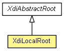

xdi2.core.features.nodetypes
Class XdiLocalRoot
java.lang.Object
 xdi2.core.features.nodetypes.XdiAbstractContext
xdi2.core.features.nodetypes.XdiAbstractRoot
xdi2.core.features.nodetypes.XdiLocalRoot
xdi2.core.features.nodetypes.XdiAbstractContext
xdi2.core.features.nodetypes.XdiAbstractRoot
xdi2.core.features.nodetypes.XdiLocalRoot
- All Implemented Interfaces:
- Serializable, Comparable<XdiContext>, XdiContext, XdiRoot
public class XdiLocalRoot
- extends XdiAbstractRoot

An XDI local root, represented as a context node.
- Author:
- markus
- See Also:
- Serialized Form
| Methods inherited from class xdi2.core.features.nodetypes.XdiAbstractRoot |
containsRelativeStatement, findInnerRoot, findLocalRoot, findPeerRoot, findRoot, findRoot, getRelativePart, getRelativeStatement, getRelativeStatements, isRootArcXri, setRelativeStatement |
| Methods inherited from class xdi2.core.features.nodetypes.XdiAbstractContext |
compareTo, equals, fromContextNode, getBaseArcXri, getBaseArcXri, getContextNode, getXdiAttributeCollection, getXdiAttributeSingleton, getXdiEntityCollection, getXdiEntitySingleton, hashCode, toString |
XdiLocalRoot
protected XdiLocalRoot(ContextNode contextNode)
findLocalRoot
public static XdiLocalRoot findLocalRoot(Graph graph)
- Given a graph, finds and returns the XDI local root.
- Parameters:
graph - The graph.
- Returns:
- The XDI local root.
isValid
public static boolean isValid(ContextNode contextNode)
- Checks if a context node is a valid XDI local root.
- Parameters:
contextNode - The context node to check.
- Returns:
- True if the context node is a valid XDI local root.
fromContextNode
public static XdiLocalRoot fromContextNode(ContextNode contextNode)
- Factory method that creates an XDI local root bound to a given context node.
- Parameters:
contextNode - The context node that is an XDI local root.
- Returns:
- The XDI local root.
setSelfPeerRoot
public XdiPeerRoot setSelfPeerRoot(XDI3Segment xri)
getSelfPeerRoot
public XdiPeerRoot getSelfPeerRoot()
getPeerRoots
public ReadOnlyIterator<XdiPeerRoot> getPeerRoots()
Copyright © 2013. All Rights Reserved.